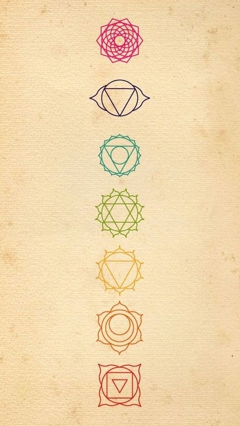

Los chakras son los centros energéticos más importantes del cuerpo, por donde fluye nuestra energía vital. Son el punto de convergencia entre el cuerpo físico y el cuerpo sutil, y es por eso que son muy sensibles a nuestro estado, y pueden cerrarse y abrirse con facilidad. A través de estos
Un chakra se “abre” (acrecienta su tamaño) cuando la persona logra tomar conciencia de su existencia y lo activa. Cuando la energía del chakra no se integra, queda bloqueada y origina diversos problemas físicos y psíquicos.
El primer Chakra es el Sacro, y se ubica en la base de la columna vertebral. Representa nuestra raíz y nos conecta con nuestro cuerpo y el plano físico. Este chakra nos permite conectarnos con la tierra y nutrirnos de ella, así como también habitar el presente. Si está abierto nos brinda seguridad, estabilidad y aceptación, y la confianza en unx mismx. Se relaciona con el elemento tierra y el color rojo.
El segundo Chakra tiene que ver con la voluntad de concretar, la sexualidad y nuestro cuerpo emocional. Se identifica con el placer, la plenitud, el dar y el recibir. Pero, si está cerrado, puede darnos sensación de vacío y carencia. Este chakra es esencial para la creatividad y para direccionar nuestra energía. Lo encontramos a la altura del coxis, y está representado por el color naranja y el elemento agua.
El Chakra del Plexo Solar rige la fuerza, el valor y la iniciativa. Así como también el poder y la decisión. Es un chakra muy importante por el caudal energético que contiene. Además, es vital en la conexión con lxs otrxs. Si lo tenemos cerrado, esto se manifiesta con sentimientos de inferioridad, confusión, y posesión sobre las personas. El elemento que lo caracteriza es el fuego, y su color es el amarillo
El cuarto Chakra es el del Corazón, lleva el color verde y su elemento es el aire. Tiene que ver con la expresión del amor, la compasión y el perdón, tanto con otras personas como con nosotrxs mismxs. También es la sede del cuerpo mental y rige el pensamiento y las ideas, además de las emociones sensibles.
El Chakra de la garganta, es el encargado de la expresión verbal y emocional. Nos da la capacidad de comunicarnos con lxs demás. Es también el centro de la vibración. la autoexpresión y la creatividad. La comunicación es una clave esencial para acceder a los planos internos y poder utilizar nuestros niveles mentales multidimensionales, así como también, un canal para expresar las necesidades propias y responsabilizarse por ellas.
El sexto Chakra, también llamado “Tercer Ojo”, rige la intuición, la imaginación y el discernimiento. Este centro tiene que ver con el crecimiento interior y posee una energía muy consciente. Si este chakra está abierto, es posible tener una visión clara, profunda y amplia de las cosas. Es el chakra del conocimiento y la percepción, y es el que nos permite trascender el mundo material. Se ubica en el entrecejo y su despertar otorga la evolución espiritual.
Por último, el Chakra de la corona, ubicado, como su nombre indica, en la coronilla. Está caracterizado por el color violeta o blanco y el elemento espacio, se relaciona con la conexión espiritual y con nuestra relación con el universo cósmico. Integra nuestra parte física, emocional, mental y espiritual y tiene que ver con una elevada dimensión de la conciencia que nos conecta con la fuente y con nuestro propósito originario. Si está abierto podemos sintonizar con lo sutil y trascendente. activa la inspiración y la comprensión del sentido profundo en cada aspecto. Para abrir este chakra es fundamental que todo el resto lo esté.
Todos estos centros energéticos suelen desequilibrarse fácilmente, pero existen diversas prácticas como, el yoga, la meditación y otras técnicas energéticas que pueden ayudar a equilibrar y armonizar los chakras. Cuando los chakras están en equilibrio, la energía puede fluir libremente a través de ellos, potenciando todos nuestros recursos y promoviendo el bienestar físico, emocional y espiritual.